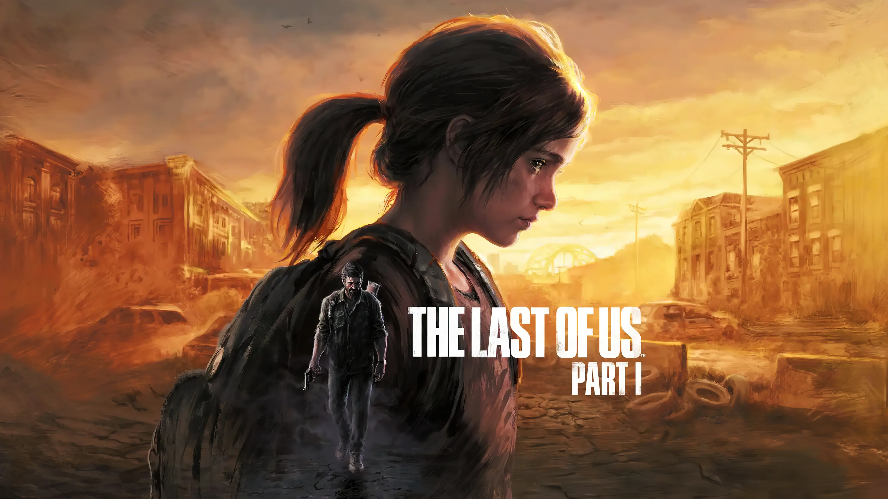

bem vindo a biblioteca de jogos
site criado para se guardar jogos que ja jogou, nao jogou, jogou e nao zerou, colocar suas descricoes sobre oque achou do jogo, tipo um bloco de notas, mas para seus jogos
tem diversos jogos na aba "pesquisar" dentro do submenu "catalogo" que pode adicionar a sua biblioteca, mas se o seu jogo de preferencia nao estiver la, voce mesmo pode adicionar seu jogo a sua biblioteca usando a aba "criar" criando um post com sua descricao sobre o jogo, e voce mesmo uma capa para o jogo usando uma url de image, tem como colocar uma avialiacao ao jogo tambem e a categoria do jogo (ex:rpg medieval)


